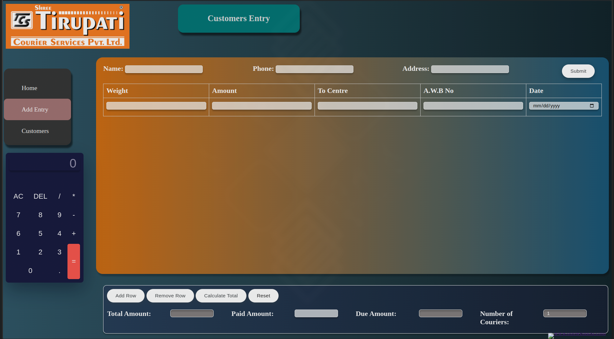
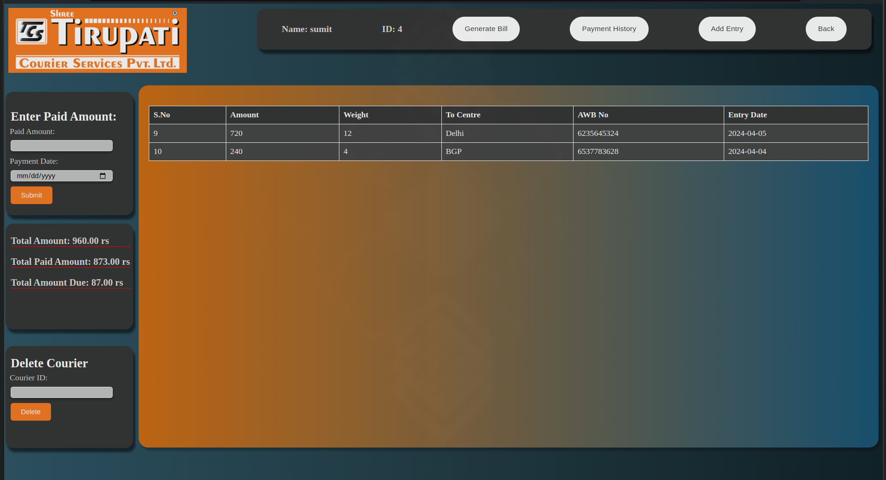

Overview
BillTrack is a comprehensive web-based solution designed to simplify billing processes and enhance customer management for businesses, particularly tailored for small and mid sized businesses. By automating billing calculations, managing item records, tracking payment dues, and sending invoices, BillTrack ensures efficient financial management and transparent customer interactions.
Purpose
BillTrack was created to meet the specific needs of a courier service client seeking a robust system to manage parcel item records, automate accurate billing calculations, track payment statuses, and streamline customer communications.
Features
- Automated Billing and Invoicing: Generate bills automatically based on predefined rules.
- Invoice Generation: Create and send invoices promptly for client convenience.
- Payment Reminders: Automated notifications for overdue payments to expedite collections.
- Customer and Parcel Item Management: Efficient management of parcel item records and customer information.
- User-Friendly Interface: Intuitive design for seamless data entry and retrieval.
- Reporting and Analytics: Generate reports for financial insights and customer analysis.
- Security and Data Protection: Secure data storage and access controls.
Technologies Used
- Front-End: HTML5, CSS3, JavaScript (ES6+)
- Back-End: PHP, MySQL
- Additional Tools: JavaScript libraries for enhanced functionality and user experience.
Images
Dashboard overview providing a snapshot of key metrics such as inventory levels, sales performance, and top-selling items.
Bill status analysis showcasing overdue payments and Remaining balance for customer.
Development Process
The development of BillTrack followed a structured approach:
- Requirement Gathering and Analysis: Defined client requirements and user workflows.
- Design and Prototyping: Created UI/UX designs and prototypes for user feedback.
- Implementation and Testing: Developed front-end and back-end components with rigorous testing.
- Deployment and Optimization: Deployed on scalable infrastructure for reliability and performance.
- Documentation and Support: Comprehensive documentation and ongoing support for user adoption.
- Security and Compliance: Implemented robust security measures to protect sensitive data and ensure compliance with industry standards.
Usage Scenarios
BillTrack is ideal for:
- Courier Services: Managing parcel item records, automating billing, and tracking payment statuses.
- Service Providers: Simplifying invoicing and improving client management.
- Small Businesses: Automating billing tasks for improved financial management.
- Mid-Sized Businesses: Streamline billing and customer management for scalability.
- E-commerce Businesses: Streamline order processing and invoice generation.
- Freelancers and Consultants: Manage invoices and track client payments.
Benefits
- Operational Efficiency: Automate tasks and minimize errors for efficient operations.
- Financial Accuracy: Ensure accurate billing calculations and timely payments.
- Customer Relations: Enhance customer satisfaction through transparent billing processes.
- Scalability: Designed for growth and adaptability to evolving business needs.
- Data Security: Protect sensitive information with robust security measures.
- Data-Driven Insights: Generate reports for informed decision-making.
Impact
BillTrack has made a significant impact by:
- Improving Operational Efficiency: Streamlined processes and enhanced resource utilization.
- Enhancing Customer Satisfaction: Transparent billing and improved communication.
- Driving Cost Savings: Optimized inventory management and reduced operational costs.
- Data-Driven Decision-Making: Informed insights for strategic planning and growth.
- Increased Revenue: Improved customer retention and enhanced sales opportunities.
- Improved Financial Management: Enhanced control over finances and improved cash flow.
Explore BillTrack
Discover how BillTrack can transform your billing and customer management processes:
Contact Us
For inquiries, feedback, or to discuss your business needs, please contact us.
Conclusion
BillTrack isn't just a billing application; it's a strategic tool designed to optimize operations, enhance financial transparency, and improve customer relationships. Whether you're managing a courier service or any other business, BillTrack empowers you to simplify billing processes, track payments efficiently, and focus on business growth. Embrace innovation in billing management with BillTrack and pave the way for enhanced efficiency and profitability in your organization.